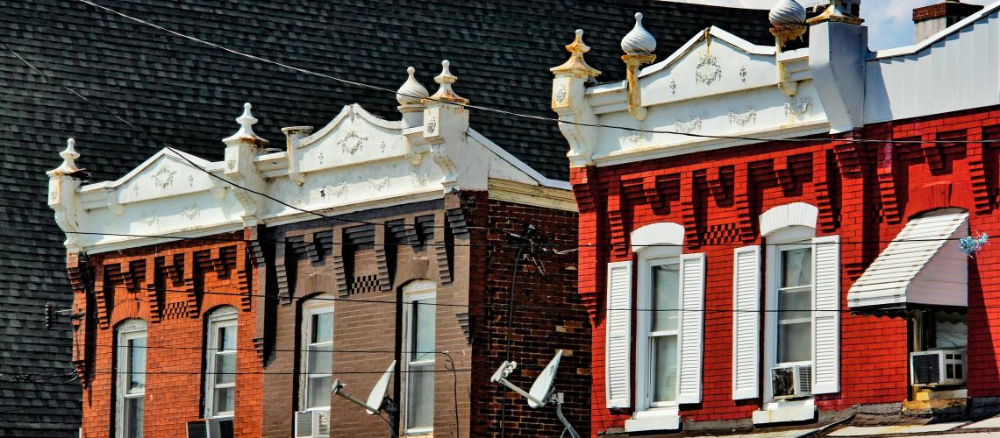

Federal housing policy shifted from New Deal redlining to HOPE VI redevelopments, but across eras, Philadelphia’s projects reveal how racial discrimination was built into the system
Philadelphia’s Racialized Housing Legacy
From Transitional Public Housing to Mixed-Income Redevelopments
Image: Residents protest housing discrimination at Whitman Park, Philadelphia (1970s). Source: Temple University Urban Archives.
Progressive Reform (1890s–1929)
Housing treated as a private commodity; reformers relied on codes/zoning.
Early experiments were tied to war industries, but no permanent public housing stock. Segregation was not yet codified in federal law, but neighborhood exclusion practices were already present.
Great Depression & New Deal (1930s)
During the 1930s, federal housing policy entrenched segregation. In 1933 the HOLC produced redlining maps. In 1934 the FHA insured mortgages largely in white-only neighborhoods and in 1937 the Wagner–Steagall Act created the U.S. Housing Authority to fund public housing while enforcing “prevailing neighborhood composition,” segregating projects.
WWII & Postwar Build-Out (1940s–1950s)
In the 1940s, the 1941 Lanham Act funded temporary defense housing, the 1944 GI Bill offered veterans’ home loans yet largely excluded African American veterans in practice, and the 1949 Housing Act launched urban renewal and authorized 810,000 public housing units.
Urban Renewal & Liberal Reform (1950s–1960s)
The 1954 Housing Act pushed cities toward slum clearance with requirements to replace demolished units. In its wake, many authorities embraced high-rise “modernist” public housing towers as the supposed solution.
Fair Housing & the Move to Section 8 (1968–1979)
The 1968 Fair Housing Act banned formal housing discrimination, and in 1974 Section 8 vouchers shifted subsidies to the private rental market.
While the scattered-site strategy aimed to avoid concentrated poverty, many homes remained substandard. Section 8 expanded access but discrimination in the private rental market limited African American families’ choices.
Market-Driven Affordable Housing Policies (1980s–1990s)
In 1986, the Low-Income Housing Tax Credit (LIHTC) shifted most new affordable housing production to private developers using tax incentives. In 1999, the Faircloth Amendment froze each housing authority’s maximum public-housing count at whatever number it had that year.
In Philadelphia, the housing authority struggled with mismanagement, vacancies, and crime. The combined effect was stark. Projects deteriorated, poverty became more concentrated, waiting lists grew, and new public housing construction was effectively blocked.
Tearing Down High-Rises, Building Mixed-Income Townhomes (1990s–2010s)
In 1992, HOPE VI financed the demolition of distressed public housing and its replacement with lower-density, mixed-income developments, and the 2009 ARRA stimulus added funds that accelerated these redevelopments.
Redevelopment often improved building design and neighborhood amenities, but the total number of units shrank and many displaced residents were unable to return. The result was a net loss of deeply affordable housing, even as sites looked newer and felt safer.
Mixed-Finance Preservation and Local Zoning Tools (2010s–Present)
Since the 2010s, HUD’s RAD program (2012) has converted public housing to project-based rental assistance or project-based vouchers (PBRA/PBV) to finance repairs and preservation, while cities have turned to inclusionary zoning and accessory dwelling units (ADUs) to add affordable homes through the private market.
While the “mixed-finance” models create architecturally improved mixed-income sites, displacement risks and persistent private-market discrimination remain.
The following slides will introduce examples of housing complexes which used policies to segregate by class and race.
Carl Mackley House
Financed by the Public Works Administration’s Housing Division and sponsored by the hosiery workers’ union, this housing opened in 1935 as a model of “modern” worker housing in Juniata Park.
Under federal “prevailing neighborhood composition” rules and FHA-era redlining, early projects in white areas including Mackley, were effectively reserved for white families, reinforcing segregation.
Click on the yellow dot on map or here to learn more.

Richard Allen Homes
This was Philadelphia’s first major slum-clearance project. The Philadelphia Housing Authority cleared multiple “blighted” blocks to construct this housing on 1941.
Because wartime and postwar policy tied tenant selection to the “prevailing neighborhood composition”, many sites housed mainly white war workers. In contrast, Richard Allen concentrated African American families in Poplar, reinforcing segregation.
Click on the yellow dot on map or here to learn more.

Haddington III
Haddington III is the later preservation of a scattered-site portfolio in West Philadelphia that combines PHA’s 1958 “used-housing” renovations (Haddington II) with new rowhouses built in the 1970s (Haddington I), totaling 48 homes.
Despite new civil-rights rules and vouchers, subsidies were mostly placed in Haddington. With many landlords blocking vouchers, families were boxed in and existing segregation persisted.
Click on the yellow dot on map or here to learn more.
Mantua Hall to Mantua Square
Mantua Hall, an 18-story PHA tower built 1960–61 in West Philadelphia, concentrated low-income African American households under the mid-century high-rise public-housing model.
After its 2008 implosion, the HOPE VI/ARRA-backed replacement Mantua Square opened around 2011 with about 101 mixed-income units, which was far fewer units than the tower, so many original tenants could not return, effectively preserving existing racial and economic patterns.
Click on the yellow dot on map or here to learn more.

Paseo Verde
Because Paseo Verde is a single-site, 120-unit mixed-income TOD next to Temple’s station, it added relatively few affordable homes amid a corridor seeing reinvestment and rising land values.
Voucher discrimination in Philadelphia, especially in lower-poverty areas, limits families’ ability to move to opportunity neighborhoods. This indicates that projects like Paseo Verde improve conditions locally but do little to undo citywide segregation patterns.
Click on the yellow dot on map or here to get more info on the official website.

References
City of Philadelphia. (n.d.). Affordable housing dataset. OpenDataPhilly. https://data-phl.opendata.arcgis.com/datasets/phl::affordable-housing/about (Year of establishment information supplemented by the author from respective housing websites.)
Billy Penn. (2023, November 11). The history of Whitman Park, a South Philly neighborhood built for white people. https://billypenn.com/2023/11/11/philadelpha-public-housing-whitman-park-history/
Pennsylvania Historical and Museum Commission. (n.d.). Public housing in Philadelphia (PHA) postwar. https://www.phmc.state.pa.us/portal/communities/pa-suburbs/files/Public_Housing_Phila_PHA_Postwar.pdf
The Encyclopedia of Greater Philadelphia. (n.d.). Public housing. https://philadelphiaencyclopedia.org/essays/public-housing/
Bauman, J. F. (1987). Public housing, race, and renewal: Urban planning in Philadelphia. Temple University Press.
Bauman, J. F., Hummon, N. P., & Muller, E. K. (1997). Public housing, isolation, and the urban underclass: Philadelphia’s Richard Allen Homes, 1941–1965. In J. W. Trotter, Jr. & E. L. Smith (Eds.), African Americans in Pennsylvania: Shifting historical perspectives. Penn State Press.
Radford, G. (1996). Modern housing for America: Policy struggles in the New Deal era. University of Chicago Press.
Wolfinger, J. (2007). Philadelphia divided: Race and politics in the City of Brotherly Love. University of North Carolina Press.